2026
A visual canvas for designing, generating and publishing data apps

I'm a strategic design leader building products that feel genuinely human.
I'm the founding Chief Design Officer and Futurist at Domo. For 15 years I've helped build one of the best cloud-native, mobile-first data analytics platforms, and now with governed, agentic AI that real people can actually use. I take a first-principles approach to AI and innovation, starting with the human problem instead of the cool demo.
A curated selection of work, with more on the way...
Giving AI agents the business context to act on what people mean
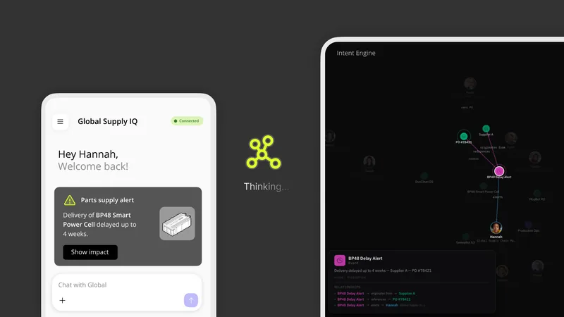
A visual canvas for designing, generating and publishing data apps
A unified data grid for fast, frictionless exploration of DataSets of any size
Showing people what to fix before their data meets AI
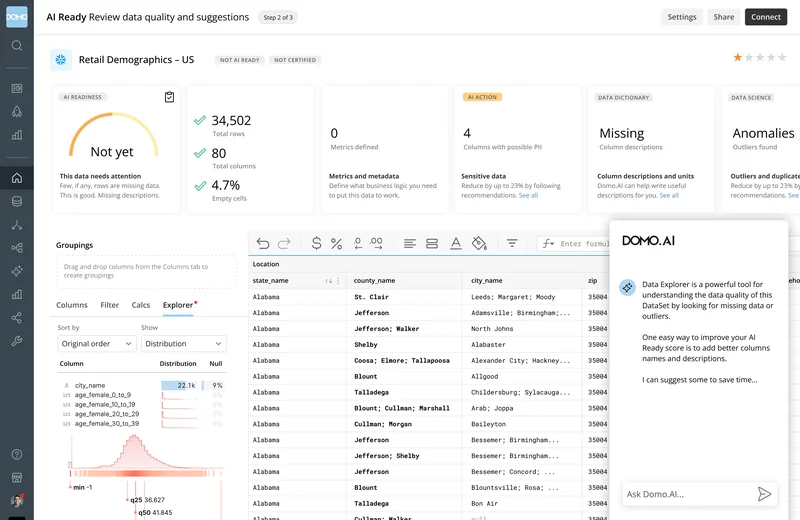
Turning business automation into flows anyone can read and edit
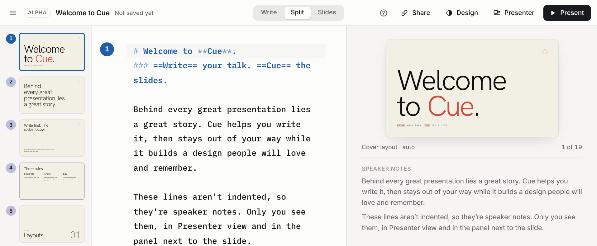
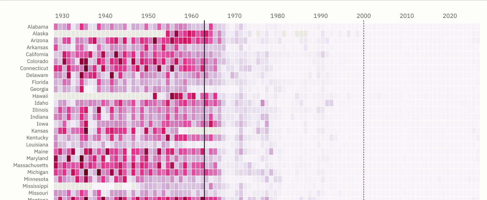
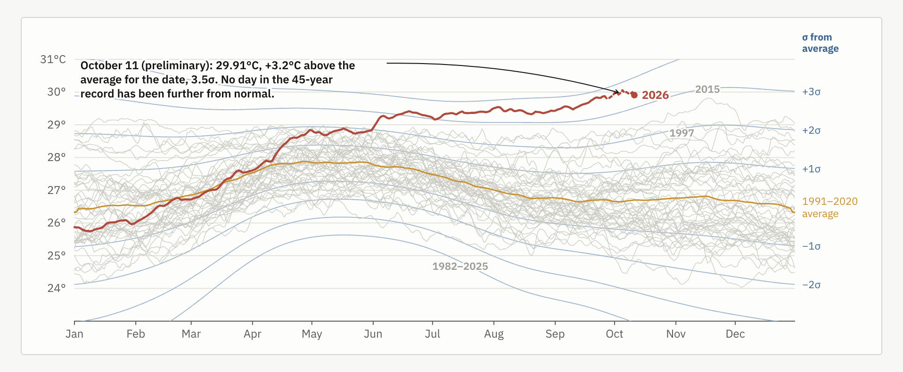
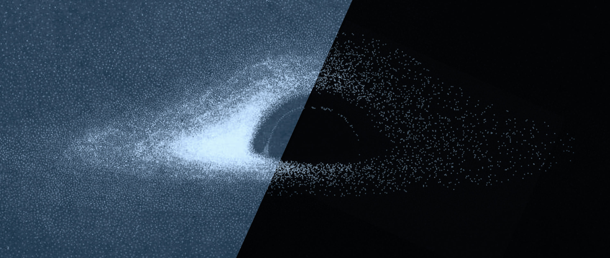
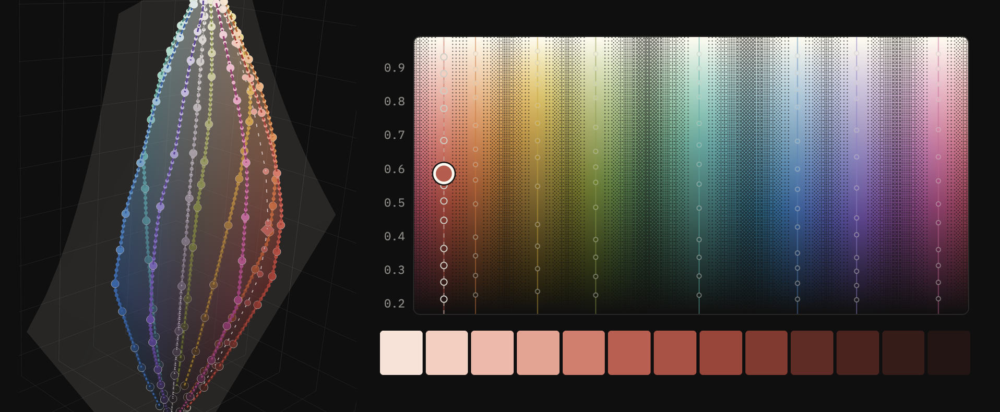
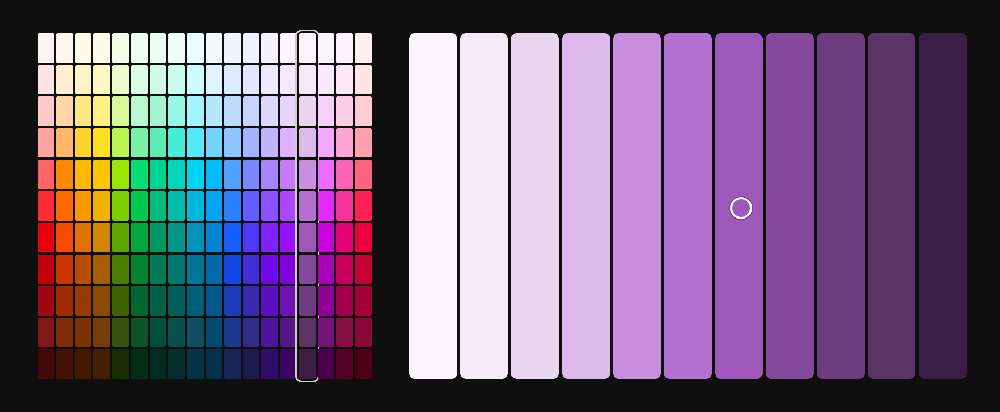
50+ TV and podcast appearances in 2026 on human-AI collaboration, the future of work and emotional design.
The full story is on LinkedIn.
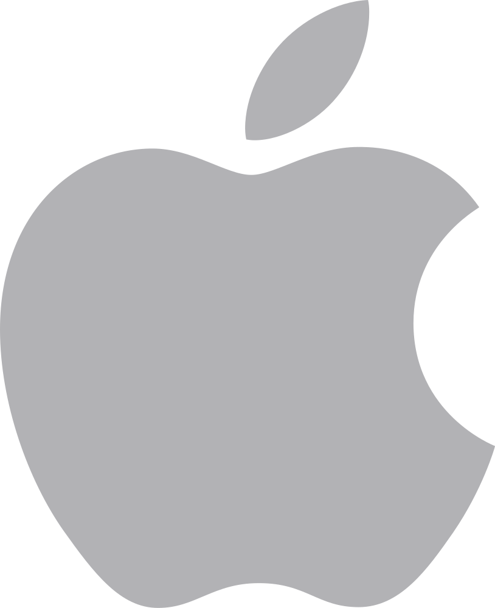
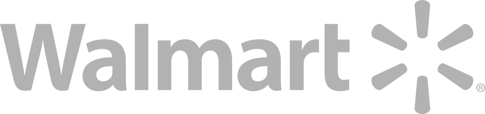
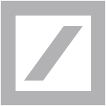
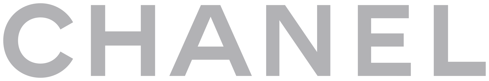
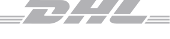
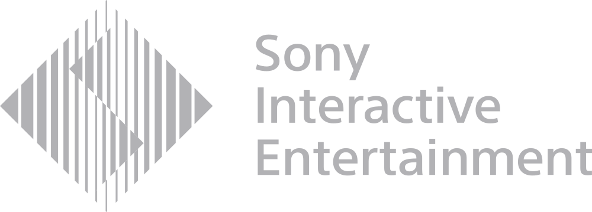
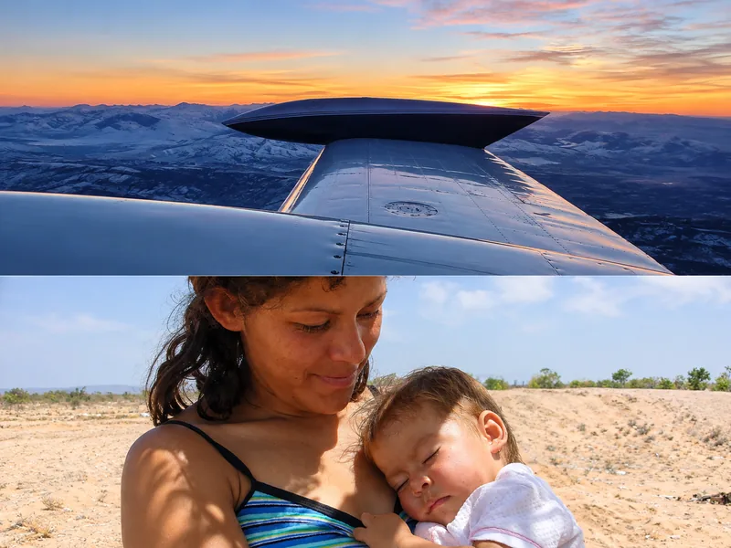
If you're building the future of work, or just looking for a spirited chat about it, let's talk.